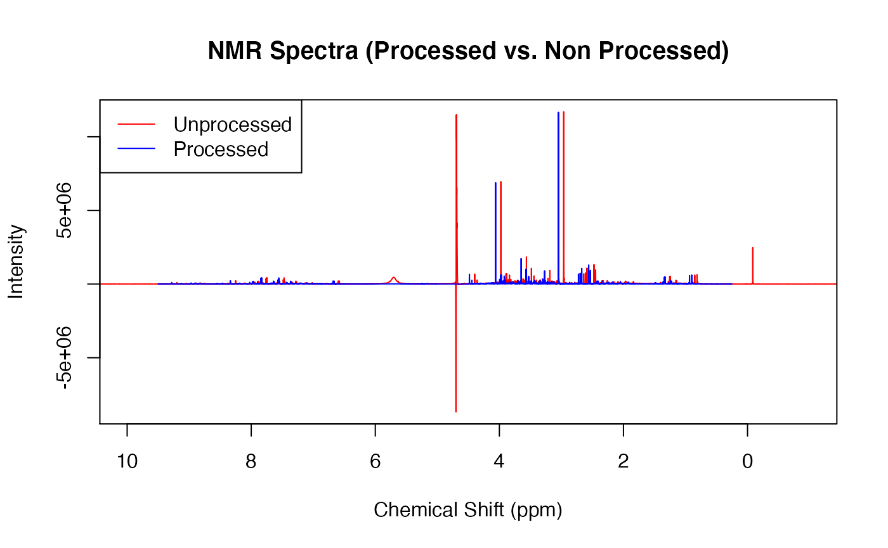
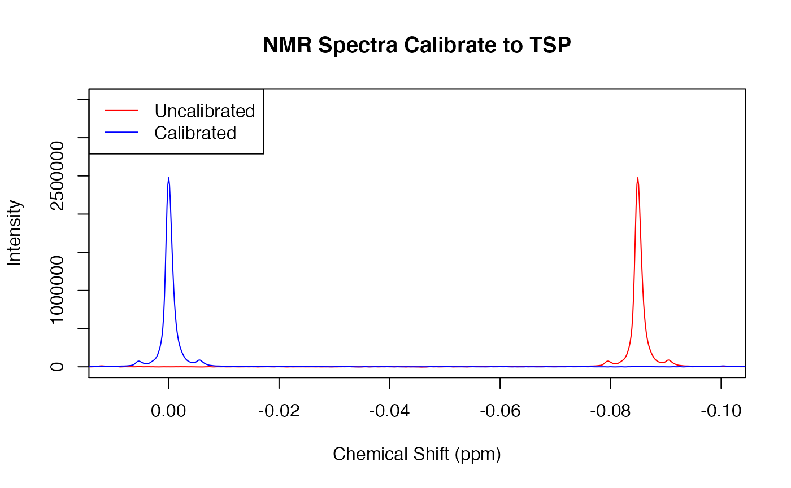

Preprocessing.RmdThe preprocessing of NMR spectra is crucial to successful outcomes. There are so many slight tweaks that can make a world of difference to the final analyses. This vignette is targeted at walking you through, step by step, what happens in the preproc() function and why it happens.
library(concentr8r)
read_in(path = system.file('extdata',package='concentr8r'), exp_type = list(exp=c("PROF_URINE_NOESY")), n_spec = 'multiple')
plot(ppm, X[2,], type = 'l', col = 'red', main = 'NMR Spectra (Processed vs. Non Processed)', xlab = 'Chemical Shift (ppm)', ylab = 'Intensity', xlim = c(10,-1))
preproc(X, ppm, meta, flip = TRUE, cali = TRUE, calib = 'tsp')
#> [0;34mFlipping the spectra... [0m[1;32mDone.
#> [0m[0;34mCalibrating to tsp... [1;32mDone.
#> [0m[0;34mChecking line width of spectra... [0m[1;32mAll spectra have linewidths under 1
#> [0m[0;34mRemoving non-quantative regions... [0m[1;32mDone.
#> [0m[0;34mPerforming baseline correction... [0m[1;32mDone.
#> [0m[0;34mCalculating Noise Estimations... [0m[1;32mDone.
#> [0m[0;34mChecking that X and meta rows match... [0m[1;32mDone.
#> [0m[0;34mChecking that ppm length and X columns match... [0m[1;32mDone.
#> [0m
points(ppm, X[2,], type = 'l', col = 'blue')
legend('topleft', legend = c("Unprocessed", "Processed"), col = c('red', 'blue'), lty = 1)
Above is a plot of an NMR Spectra. As it is labeled, there is an unprocessed (i.e., having not been preprocessed) spectrum in red and a processed NMR spectrum in blue.
Firstly, notice how the x-axis is in reverse. This is not a mistake and this is the way it is meant to be. Other key points to notice from this plot are:
### TSP Calibration
Notice how the blue spectrum seems to shift to the left compared to the red spectrum. This is because Trimethylsilyl propanoic acid (TSP) signal (the right most peak only in the unprocessed spectrum) is used as a reference. This signals peak should always be centered at 0. Below you can see how the red spectrum’s TSP peak is right-shifted. preproc() corrects for this and shifts the entire spectrum towards 0 to create the blue spectrum.
read_in(path = system.file('extdata',package='concentr8r'), exp_type = list(exp=c("PROF_URINE_NOESY")), n_spec = 'multiple')
plot(ppm, X[2,], type = 'l', col = 'red', main = 'NMR Spectra Calibrate to TSP', xlab = 'Chemical Shift (ppm)', ylab = 'Intensity', xlim = c(0.01,-0.1), ylim = c(-100, 3.5e+06))
Xc <- cali(X, ppm, type = c("tsp"))
points(ppm, Xc[2,], type = 'l', col = 'blue')
legend('topleft', legend = c("Uncalibrated", "Calibrated"), col = c('red', 'blue'), lty = 1)
Now that we understand what NMR spectra look like and what it all means, lets have a gander at the arguments that preproc() takes and what they mean.
Possibly the most important argument in the function, we have X which is our spectral data. For the sake of this vignette, our X is going to be a matrix because more often than not, there are hundreds of spectra that you will be working with, but, preproc() along with a few other functions are perfectly suited to handling just one spectrum (i.e., an array).
Our X argument needs to be provided in a specific orientation being that the rows of the matrix must be the samples (so each row contains all values for one sample) and the columns must be the ppm values. As you can see below, our X matrix has 2 rows and 54692 columns meaning it has 2 spectra and 54692 ppm variables.